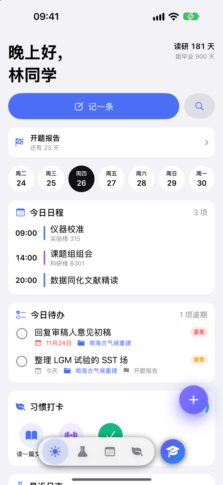
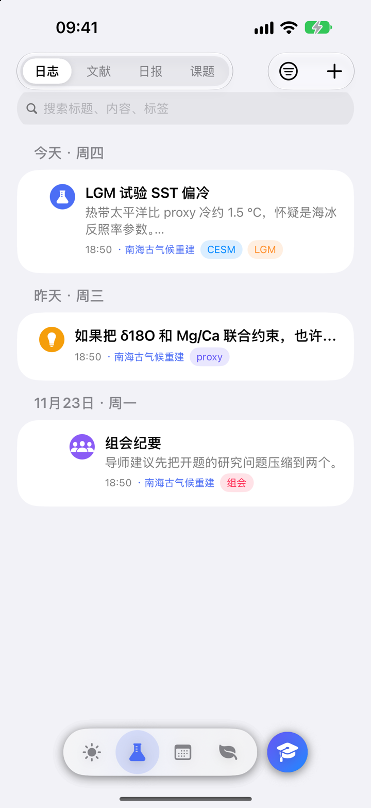
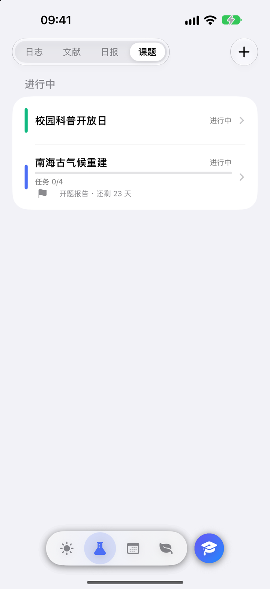
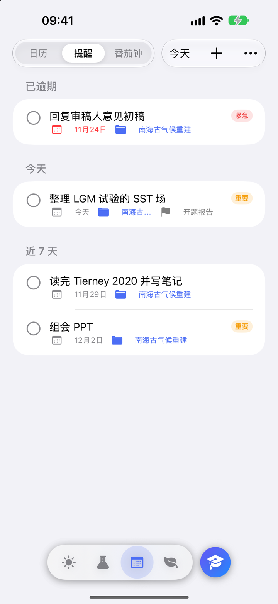
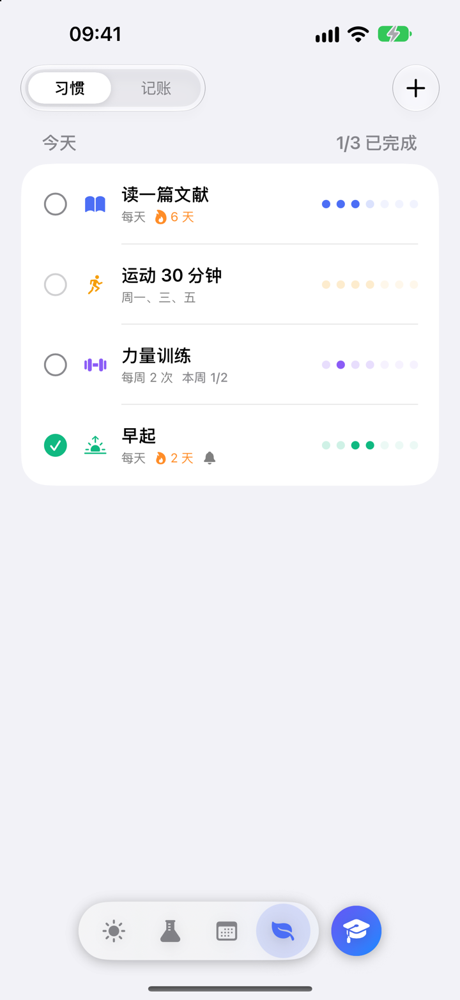
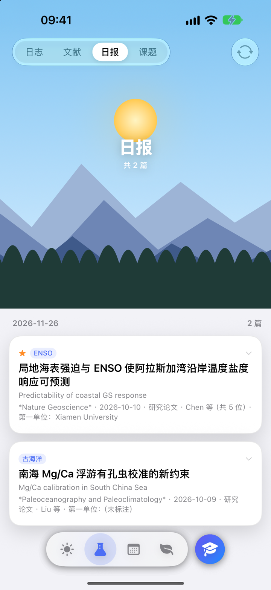

科研日志、文献日报、课题、待办、日程和专注时间，放在一个地方。研究不是一堆散落的笔记，而是「我在做什么」和「我接下来要做什么」。

下面是 App 里的真实界面，用示例数据截的。从早上记一条实验记录，到晚上看今天专注了多久。

按天分组，标签和课题挂在同一条记录上。搜标题、内容或标签都能找回来。

课题带着任务进度和里程碑，文献读完直接挂进来，不用另建一份索引。

逾期、今天、近七天自动分组，紧急和重要标在右边。和系统提醒双向同步。

读文献、运动、早起，连续天数看得见。科研之外的那部分，也值得被记录。

按你关注的领域挑文献，标题、期刊、作者、第一单位排在一起。看到有用的，一键收进课题，第二天的日报会避开已经读过的。
研序无需注册账号，也没有接入广告、追踪或分析 SDK。只有你主动使用 DOI、Zotero 或外部日报等功能时，App 才会连接相应服务。
TestFlight 公测，免费。不需要邮箱、手机号或任何注册步骤。
把手上在做的研究建成课题，之后所有日志、文献和待办都往这里挂。
今天做了什么、卡在哪、下一步试什么。三十秒记完，比补实验记录本容易。